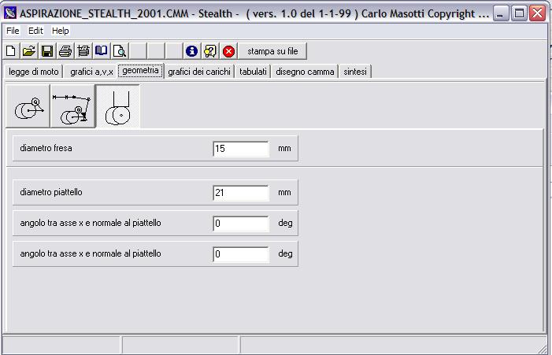

Flexiprogrammi di gestione delle linee FMS di montaggio |
|
FactorySW gestionale basato su MySQL per la gestione dei prodotti e dei listini vendite |
|
RedE’ un programma che ho scritto per rendere più agevole la scrittura di relazioni tecniche con capacità di calcolo. Alcune caratteristiche del programma allo stato attuale di sviluppo:
Rispetto ad altri programmi di matematica vi sono significative differenze.
downloadLa versione attualmente disponibile per il download è piuttosto vecchia. Al più presto renderò disponibile una versione aggiornata. |
|
calcolo di cinematismi a cammaIn effetti questa è solo una delle tante implementazioni di programma per cinematismi a camma. Nel tempo ho avuto modo di scrivere vari programmi che, con differenti sfumature di impostazione del calcolo, permettono il calcolo delle camme. Le finestre che seguono sono un esempio di una camma di aspirazione per un motore 4 tempi effettivamente costruito. La geometria del cinematismo si inserisce nella finestra che segue. La finestra riporta solo i dati significativi per la geometria selezionata. |
|
Calcolo fluidodinamico di un motore a combustione internaQuesto SW consente di calcolare la curva di coppia e di potenza di un motore a scoppio 4 tempi a partire dalle dimensioni dei singoli componenti del motore stesso. Il programma calcola anche la legge di moto delle camme.
Per ottenere la curva di coppia e potenza vengono utilizzate le leggi della fluidodinamica applicate ai condotti di aspirazione e scarico ed anche al cilindro dove viene simulato il processo di combustione. Valutando l'andamento delle onde di pressione all'interno dei condotti è possibile risalire alle portate istantanee nella sezione delle valvole e quindi al rendimento volumetrico e di conseguenza la coppia istantanea fornita dal motore. Il modello tiene conto anche della composizione chimica del gas in ogni punto dei condotti e nel cilindro.
|
|
nome di files in minuscolo
Alcuni programmi di masterizzazione trasformani i nomi dei files o delle directory in maiuscolo. Questo può causare alcuni inconvenienti nel caso i files debbano essere utilizzati anche in sistemi UNIX. Rinominare manualmente molti files può essere un lavoro decisamente gravoso! download minuscolo.zip |
|
propagazione d’onda in un condotto
il programma dà la possibilità di variare alcuni parametri di input e fornisce la forma d'onda nel condotto (finestra inferiore) in più, nella finestra superiore traccia il grafico della pressione nel serbatoio e in due punti del tubo la cui posizione è definibile nell'input.
|
|
Plant: programma simmulazione impiantiQuando un'azienda ha necessità di incrementare la produzione deve valutare molto attentamente quale sia la strada migliore per raggiungere gli obiettivi che si è data. Questa esigenza può essere in qualche modo ridotta ad un problema di ottimizzazione che richiede la ricerca di una soluzione alla domanda: Qual'è la configurazione di impianto che garantisce il raggiungimento del target di produzione con il minimo di investimento? Se il flusso logico della produzione è abbastanza semplice è spesso possibile valutare le alternative senza ricorrere a strumenti di calcolo complessi. Vi sono però molti casi nei quali il flusso di produzione è talmente complicato da rendere proibitiva un'analisi non assistita da un computer. Il livello di complicazione di un flusso di produzione è aumentato dai seguenti fattori:
Le variazioni di lotto di produzione sono frequenti e bisogna mantenere riconoscibili i componenti dei singoli lotti, quindi la linea deve essere svuotata, interamente o sezione per sezione, prima di avviare la produzione di ogni nuovo lotto. In molti casi la perdita di efficienza dovuta a queste fasi può essere elevata, specie nei casi in cui i tempi di attraversamento della linea sono alti, le procedure di svuotamento sono lente oppure sono molto frequenti ci sono polmonature che devono necessariamente essere dimensionate non solo in termini di capacità ma anche di portata in entrata ed in uscita. una o più macchine nella linea sono intermittenti e i trasportatori di collegamento hanno anche la funzione di creare dei piccoli polmoni che disaccoppiano le cadenze delle singole macchine. In queste situazioni, senza un simulatore, è molto difficile, specie nelle fasi di avviamento e arresto, poter prevedere il comportamento dei prodotti nel trasporto. Nel caso di errori nel fissare la lunghezza o la velocità del trasporto, possono facilmente generarsi cali di rendimento della linea.
Per disporre di uno strumento sufficientemente affidabile per la progettazione di impianti, ho sviluppato un SW in grado di simulare il funzionamento di impianti e linee di produzilne automatizzate. Se pensate che questo approccio possa esservi utile non esitate a contattarmi.La versione demo che potete scaricare vi permette di eseguire i seguenti comandi:
Nella versione full sono disponibili altri comandi che consentono la creazione e la modifica di nuovi impianti. Nel file compresso che potete scaricare troverete anche un esempio che potete caricare ed eseguire. Istruzioni per l'uso:
|
|
programma di gestione del listino venditeQuesto programma permette di gestire un listino vendite agevolandone le operazioni di aggiornamento, stampa e utilizzo sia a livello commerciale che tecnico. E' composto da alcuni programmi distinti che operano sulla stessa base dati. L'inserimento del prezzo del componente può essere eseguito manualmente, oppure si può utilizzare un programma che, interfacciandosi con il sistema gestionale dell'azienda, interroga il data base dei listini vendita e inserisce il costo di ogni componente. Stampa del listino venditeIl listino vendite può essere stampato per permetterne la consultazione e l'utilizzo anche in assenza di un PC. Il listino vendite stampato è composto da una pagina di intestazione, da un indice gerarchico dei prodotti di cui l'immagine che segue fornisce un esempioe da una serie di pagine nelle quali vengono illustrati i prodotti a listino. Per ogni prodotto viene inserito un disegno, una tabella di variabilità ed il costo di ogni variabilità. (vedi esempio) programma di selezione per ufficio tecnicopermette di selezionare un componente e di inserirne in automatico lo schema all'interno di un disegno autocad aperto. La selezione avviene in una finestra di cui la figura di seguito rappresenta un esempio. Ogni volta che si seleziona un componente il programma ne visualizza il disegno. Le icone permettono di selezionare quattro schemi differenti associati al componente (vedi esempio ). L'icona inserisce lo schema visualizzato all'interno di un disegno autocad aperto. Programma di selezione per i venditoriIl programma di selezione (vedi esempio) è del tutto analogo a quello utilizzato dall'ufficio tecnico, con l'unica differenza che l'icona in questo caso opera su un qualsiasi documento word aperto eseguendo le seguenti operazioni:
|